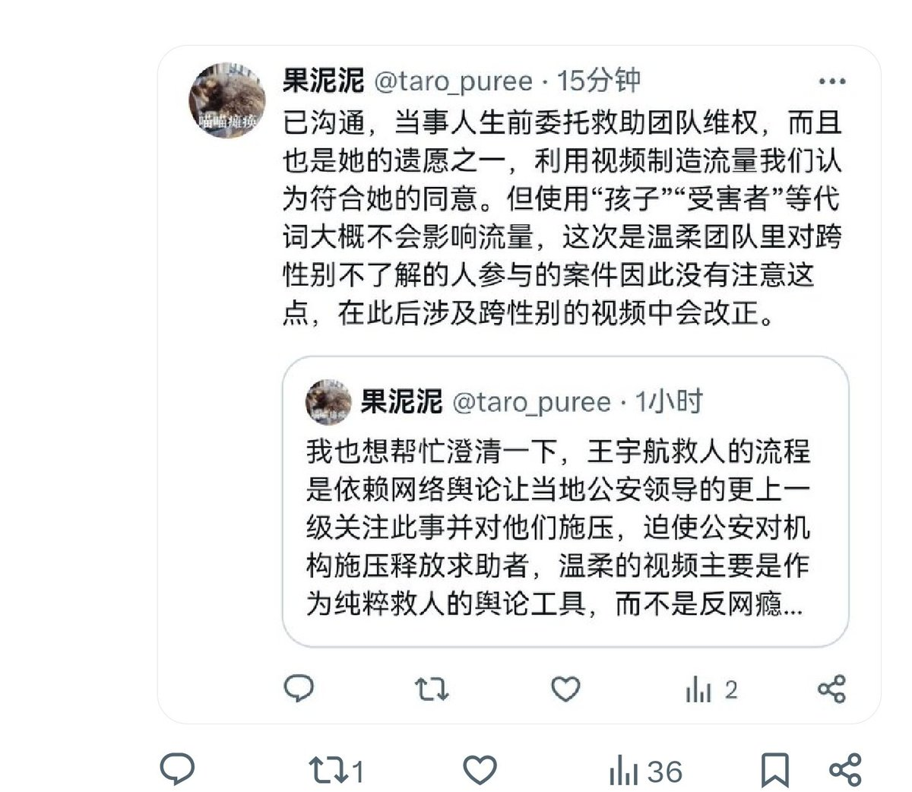
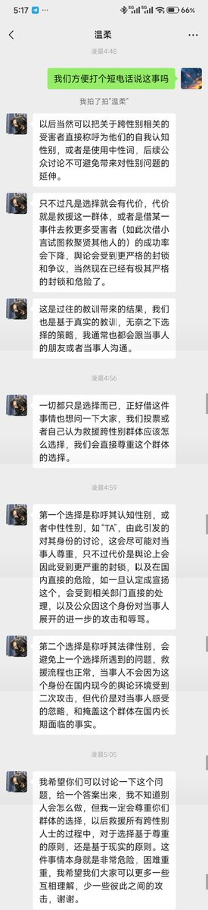

nonnun
@h191980276
@Pikaunderlight 你们有人说“大概不会影响流量”，“不了解”“没有注意”“会改正”这会又是必须要男性称呼了，如果你们自己对怎么操作会产生什么后果判断不清，哪来的资格以什么后果为理由要求必须怎么操作？


暮色前的晨曦
@Pikaunderlight
我是聚贤崇本案有关工作中的“晨曦”。
我们希望大家能够讨论一下，给一个答案出来，我们之后的救援活动就会按照这个来进行。希望大家能够认真看完截图。 https://t.co/d1gSxjXh0B